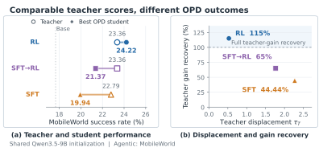
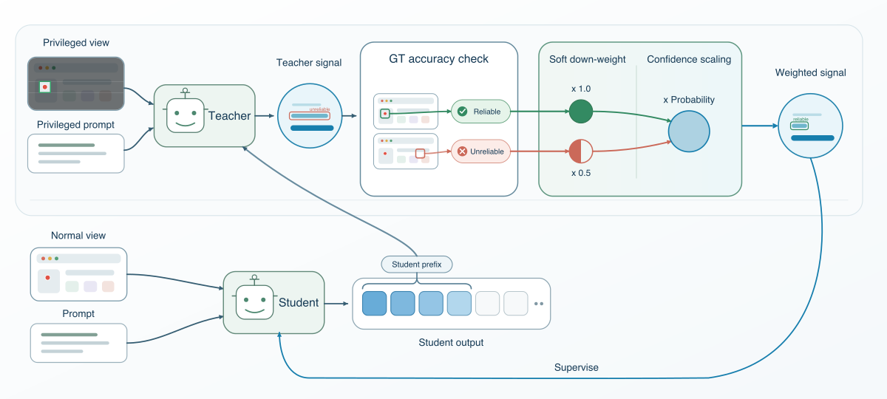
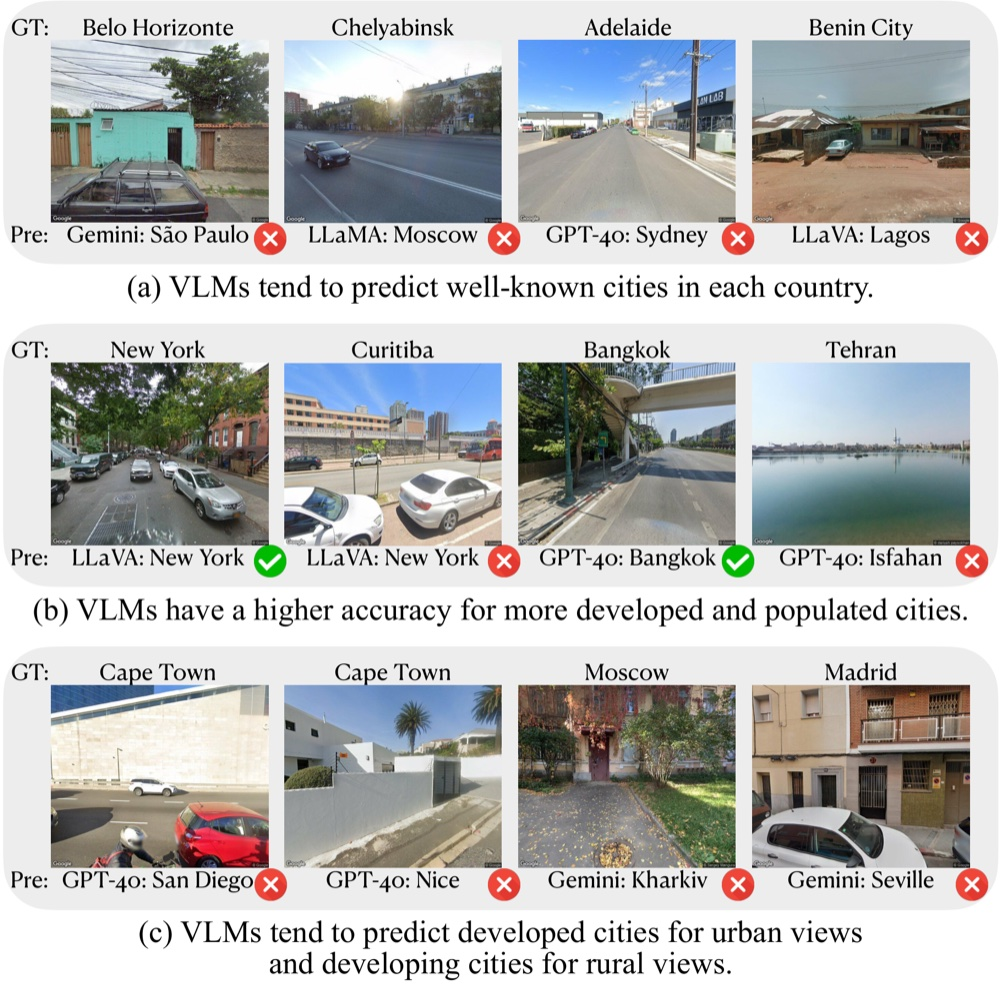

About Me
I am a PhD student in Computer Science at the University of Georgia, advised by Prof. Ninghao Liu.
My current research focuses on model merging through on-policy distillation (OPD), with the goal of combining complementary capabilities from multiple models into a single model. I also explore computer-use agents (CUA).
Research Interests
- Multi-model capability merging — combining complementary capabilities through OPD-based model merging.
- Agentic CUA — agents that perceive, reason about, and interact with digital environments.
- Model testing and evaluation — assessing capabilities, performance, reliability, and limitations.
Selected Publications
* Equal contribution. See Google Scholar for the latest list and citations.
-

arXiv 2026Train4Merge: RL or SFT—Which Yields Better Teachers for OPD-Based Model Merging?
arXiv preprint, 2026.
-

arXiv 2026Trust the Right Teacher: Quality-Aware Self-Distillation for GUI Grounding
arXiv preprint, 2026.
-

EMNLP 2025AI Sees Your Location—But With A Bias Toward The Wealthy World
EMNLP 2025 (Main Conference).
More Publications
2026
-
Self-Supervised Scaling of Terminal Environments for Scientific Domains
arXiv preprint, 2026.
-
Online Skill Learning for Web Agents via State-Grounded Dynamic Retrieval
arXiv preprint, 2026.
-
TRON: Targeted Rule-Verifiable Online Environments for Visual Reasoning RL
arXiv preprint, 2026.
2025
-
Asclepius: A Spectrum Evaluation Benchmark for Medical Multi-Modal Large Language Models
ACL 2025 (Long Papers).
-
Towards Trustworthy GUI Agents: A Survey
arXiv preprint, 2025 (revised 2026).
2024
-
Not All Countries Celebrate Thanksgiving: On the Cultural Dominance in Large Language Models
ACL 2024 (Long Papers).